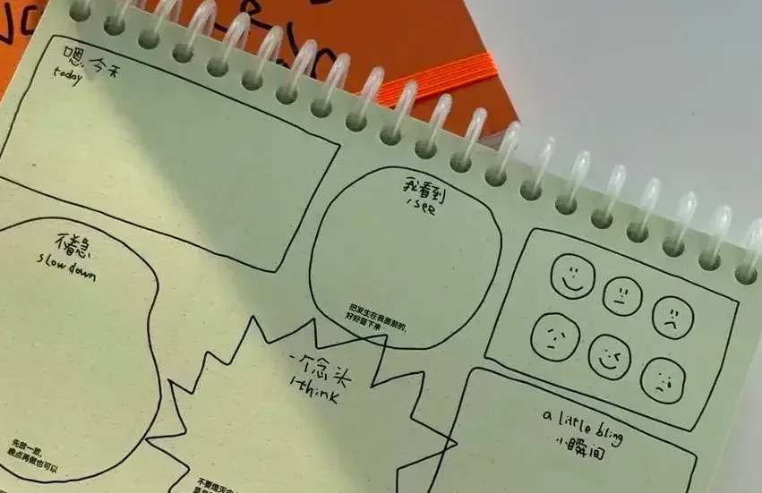
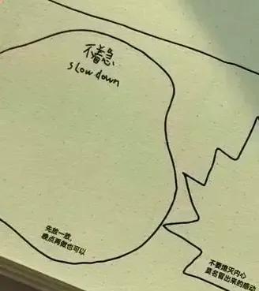
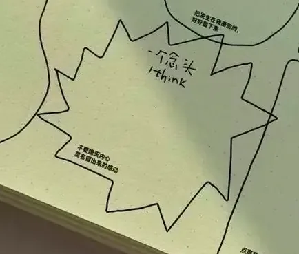
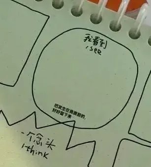
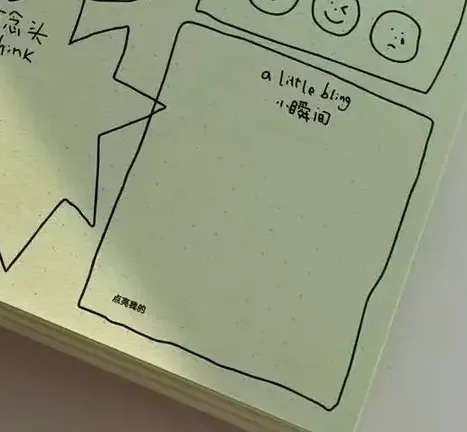
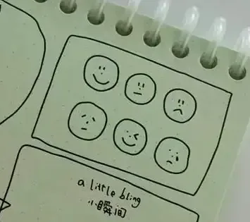

TO DO→
TO FEEL
TO FEEL
有些事情可以等一等；
有些事情自然地发生，就已经足够。
有些事情自然地发生，就已经足够。
some things can wait. some are already enough.
— THE UNPRODUCTIVE PLANNER —
空着也是一种使用 ✓






关于这本手册 THE STORY //


一本「非效率手册」，当然允许你没有效率地使用它。